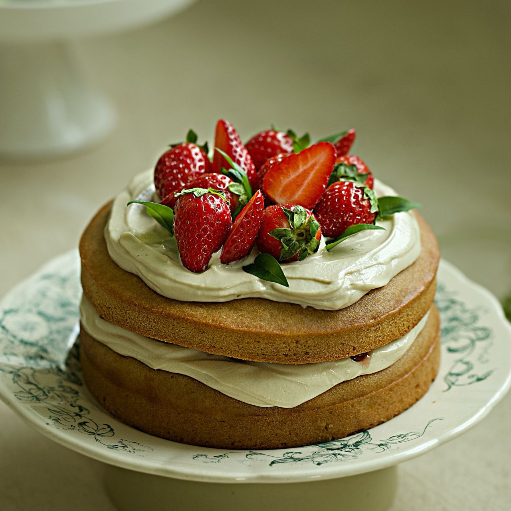

비건 딸기 크림 케이크
생크림 대신 캐슈넛,두유 등을 넣어 비건용 크림을 만들어 고소한 맛이 일품인 크림 위에 맛있는 딸기를 올려 케이크를 장식한 비건 딸기크림케이크입니다.

기본 재료 : 1개(지름 15cm)기준
- 통밀가루 190g
- 베이킹파우더 5g
- 소금 2g
- 포도씨 오일 85g
- 두유 200g
- 황설탕 130g
- 식초 7g
- 바닐라 익스트랙 5g
- 시나몬가루 3g
- 캐슈넛 200g
- 메이플 시럽 75g
- 두유 90g
- 딸기잼 20g
- 딸기 100g
조리 과정
- 1. 통밀가루, 베이킹파우더, 소금을 체 쳐 주세요. (Tip. 체치는 과정은 재료를 고루 잘 섞이도록 만들어주고 굽는 과정에서도 고르게 구워지도록 해줘요)
- 2. 포도씨 오일과 두유를 휘핑기로 잘 섞은 후 황설탕을 넣고 녹을 때까지 저어주세요.
- 3. 황설탕 혼합물에 식초와 바닐라 익스트랙을 넣고 섞어주세요. 채 친 가루를 넣고 섞어주세요.
- 4. 틀 2개에 오일을 소량 바른 후 반죽을 나눠 붓고 2~3번 내리쳐 주세요.(tip.내리치는 과정에서 기포가 제거 되며 기포를 제거해야 구멍이 나지 않고 반죽이 고르게 익을 수 있어요)
- 5. 180도로 예열된 오븐에서 20분간 구운 후 170도에서 10-15분 더 구워주세요. 오븐에서 꺼내자마자 뒤집어 꺼내 식힘망에서 식혀주세요.
- 6. 캐슈넛은 따뜻한 물에서 2-3시간 정도 불려주세요.
- 7. 믹서기나 푸드프로세서에 물기를 제거한 캐슈넛, 메이플 시럽, 두유, 바닐라 익스트랙을 넣고 곱게 갈아주세요.(tip. 주걱으로 섞으면서 갈아주면 더욱 부드러운 크림을 만들 수 있어요)
- 8. 케이크 시트 한 장을 돌림판 위에 올리고 캐슈크림을 올린 후 스패출러로 동그랗게 펼치며 발라주세요.
- 9. 딸기잼을 바르고 나머지 한 장을 올린 후 캐슈크림을 동일하게 발라주세요.
- 10. 딸기를 올린 후 허브로 장식해 완성해 주세요.